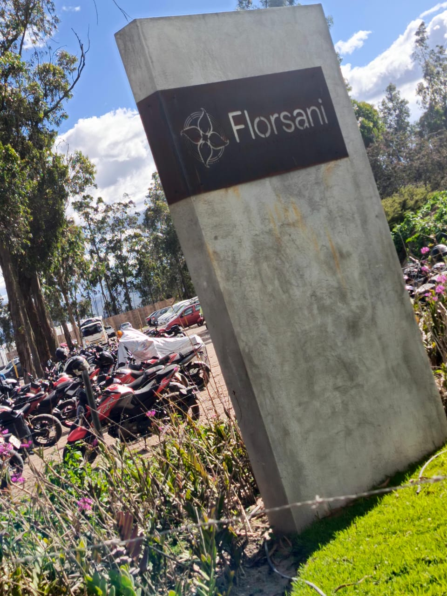
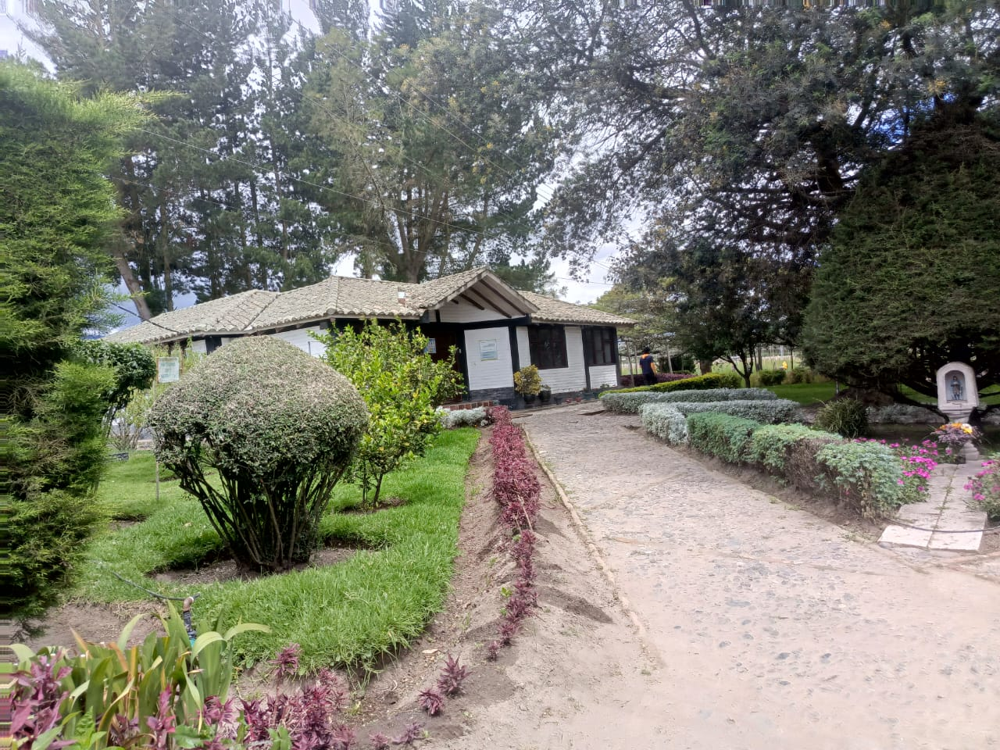
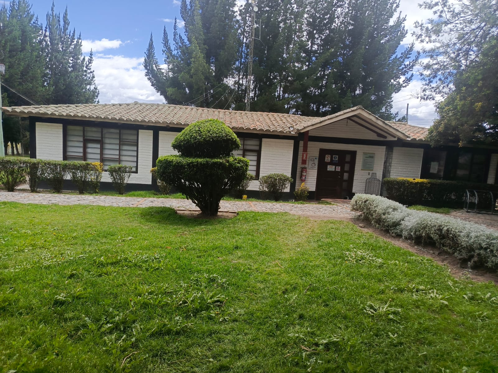
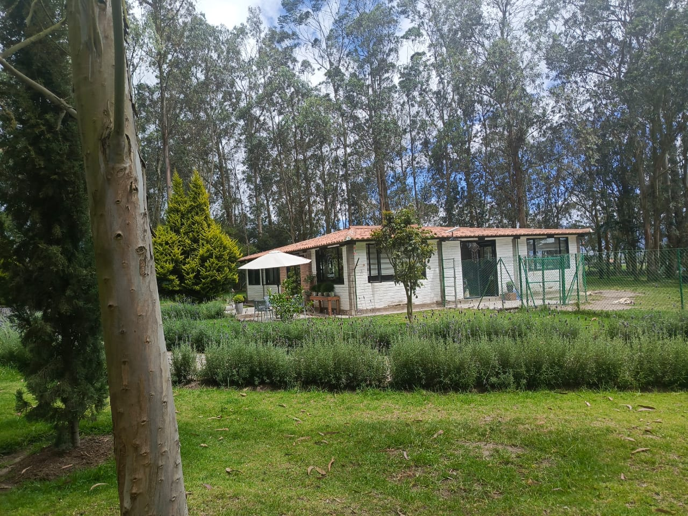
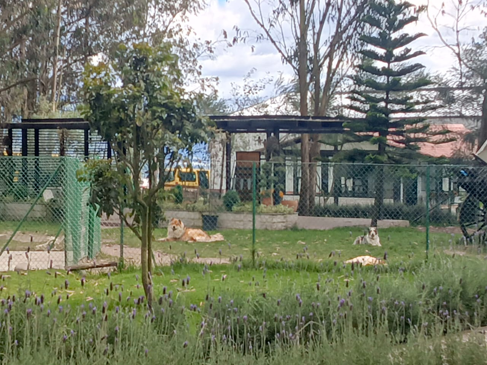
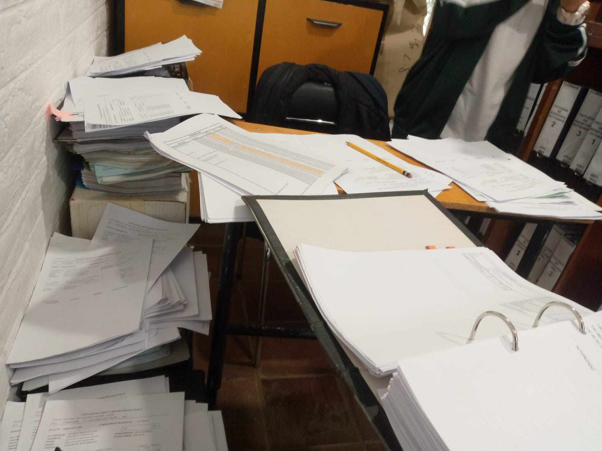
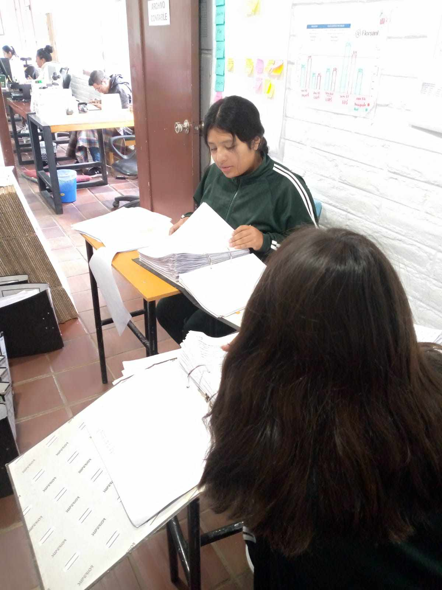
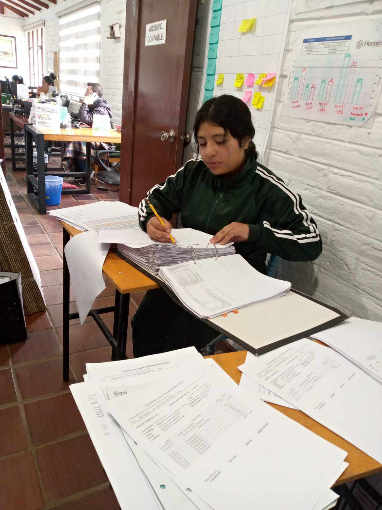

|  |
El primer día que asiste a la empresa de Florsani estuve a las 5:30 am y ya estaba uno de mis compañeros (Jedy vega ) y nos esperamos a que llegue el amigo (Brandon rodríguez) que llego después de unos 5 minutos...luego nos tocó volver a esperar ya que los guardias nos informaron que las oficinas de recursos humanos abren a las 6:30am pero a las 6.00am nos hicieron ingresar a que desayunemos para eso ya la mayoría de compañeros estaban y desayunamos todos juntos y también nos tomamos fotos para tener de recuerdo...
Ya luego de eso nos dirigimos a las oficinas de recursos humano donde nos recibió karolina rocero ella nos habló sobre cómo se trabajaba en la plantación luego nos hizo presentar y pregunto si teníamos alguien en la plantación e hizo anotar, ya luego nos hizo sorteo para ir a cada una de las áreas, y ella nos fue a dejar a cada uno en las oficinas, ya luego de eso mí me toco en el área de contabilidad junto con mi compañera Gissel y nos pusieron a cargo de un ing. que lo apodaban "Beto" nos enseñó a como se archiva cada factura y guardar por códigos, fue un trabajo un poco difícil ya que debíamos buscar en carpetas diferentes y en ocasiones no se encontraba ya que decía que aún no imprimían, pero para nosotras era pérdida de tiempo, después de una semana y 2 días nos tocó estar en casa ya que nuestro país estaba pasando por un momento difícil , ya al final ya para regresar a la empresa llegamos a tener 2 días de clases virtuales que eran jueves y viernes , y que volvimos lunes a la finca llego un chico nuevo cual ha sido un excompañero de mis compañeras él se quedó en el área de contabilidad junto con mi compañera y mi persona ya que igual estuvo a cargo de Don Beto…
Don Beto nos explicó que teníamos que ordenar desde el 2021 (que no había mucho) y el 2022 cual si era y 2023 por lo cual la mayoría de tiempo pasamos buscando en archivos
hubo una ocasión donde llegaba a preguntar cómo era el manejo desde la laptop y me explicó una parte de lo él realizaba y era que tenía que cambiar código si era compras exportadas de otro país y si no se queda tal como está, bueno la mayoría pasamos en archivos y en ocasiones nos tocaba realizar comprobantes en la computadora
También nos informaron que en la empresa no se dejaba desperdiciar nada todo era útil y también recogían a perritos de la calle o a veces personas se iban a dejarlos botando en la puerta de la empresa
En la empresa tampoco se puede sacar ninguna flor a menos que se tenga una autorización
IMÁGENES SOBRE LAS PRACTICAS
| OFICINA DE RECURSOS HUMANOS
 |
OFICINA DE CONTABILIDA
 |
| OFICINA DE VENTAS
 |
PERRITOS ADOPTADOS
 |
CARPETAS DE FACTURAS
 |
LAS HOJAS QUE NOS ENTREGÓ DON VETO PARA BUSCAR EN LAS CARPETAS

|
| TRABAJO EN GRUPO
 |
 |